Las Llanuras
El bioma de llanuras (plains) en Minecraft es un terreno plano y abierto caracterizado por pasto, hierba alta y pocos árboles. Es considerado uno de los mejores biomas para principiantes por su visibilidad y facilidad para construir.
Oveja:
La oveja es una de las criaturas pasivas más importantes y comunes de Minecraft. Su función principal es proveer lana y carne de cordero, elementos esenciales para sobrevivir (como fabricar una cama) y construir en el juego.
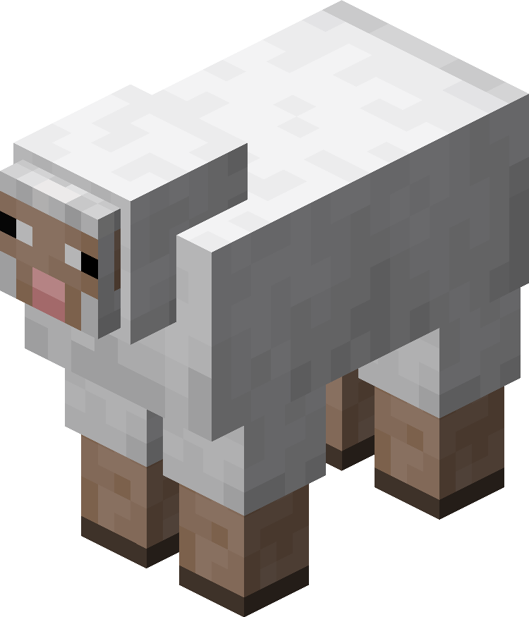
Vaca:
La vaca es una de las criaturas pasivas más importantes y comunes de Minecraft.
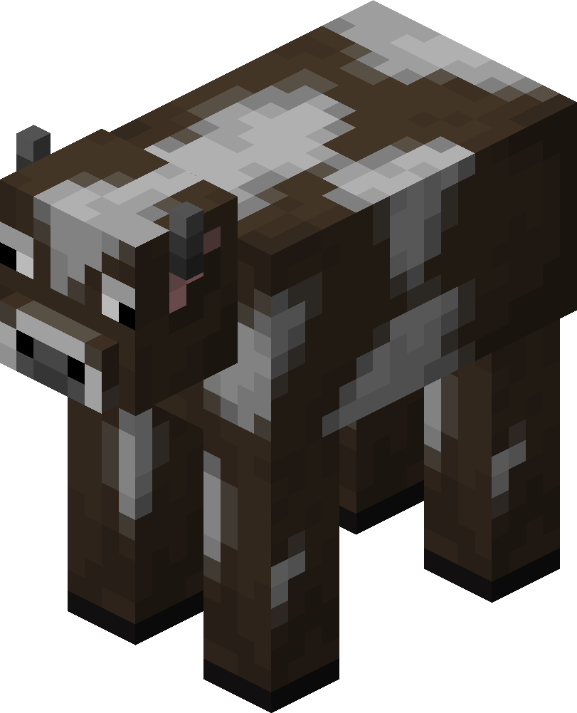
Cerdo:
El cerdo es la tercera criatura pasiva y la última importante en Minecraft. Su única función es proporcionar chuletas; no tiene funciones extras.
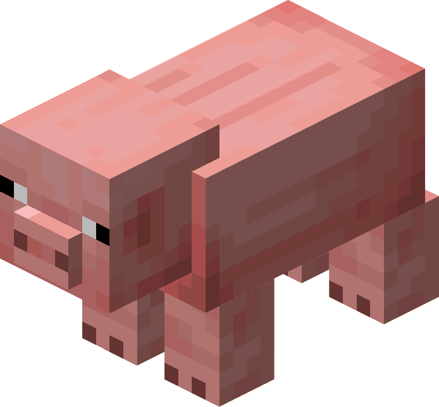
Abeja:
La abeja es una criatura neutral, la cual atacará si:
- se destruye su colmena
- se recoge la miel sin una fogata por debajo de la colmena
- es atacada por el jugador u otra criatura
Su principal función es recolectar polen y dejarlo en su colmena y así obtener miel. Se requiere una fogata para poder hacerlo.
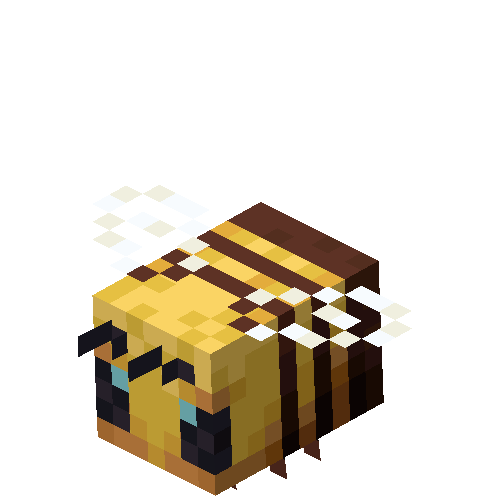
Pollo:
El pollo es una criatura pacífica que es muy frágil en comparación con otros animales de granja
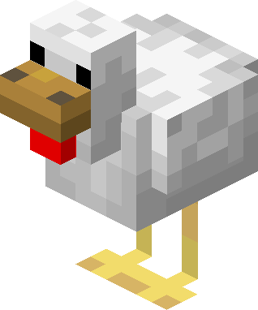
Caballo:
El caballo es uno de los mejores medios de transporte terrestre cuando se empieza un mundo
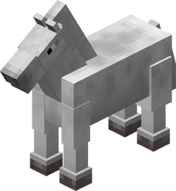
Materiales más valiosos:

Madera
Se puede obtener talando un árbol de cualquier tipo
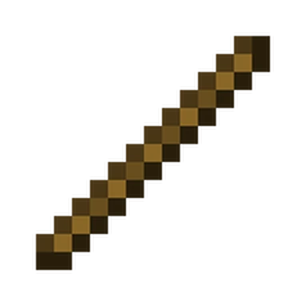
Palos
Útil para crear herramientas y cosas misceláneas, se puede obtener crafteando o esperando a que lo deje cualquier tipo de hoja al romperse.
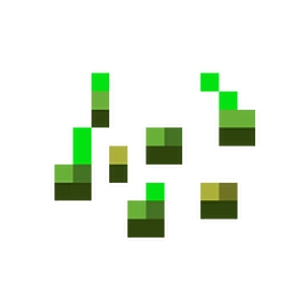
Semillas
Sirven para obtener trigo, se requiere un sitio cerca de agua, tierra y poder arar esa tierra.

Tierra
Bloque muy común, pero muy útil para decorar suelo rural, plantar o marcar el área de una construcción.

Manzana
Comida que se puede obtener a través de las hojas de los árboles
Variantes
Este, como todos los biomas de Minecraft, tiene variantes de lo más pintorescas y raras.
Algunas variantes son:
-
La Sabana: es un bioma cálido, no es fácil encontrar agua.
-
La Llanura nevada: es un bioma helado, el agua está por debajo de una capa de hielo.
-
Llanura de Girasoles: es como una llanura normal con muchos girasoles.
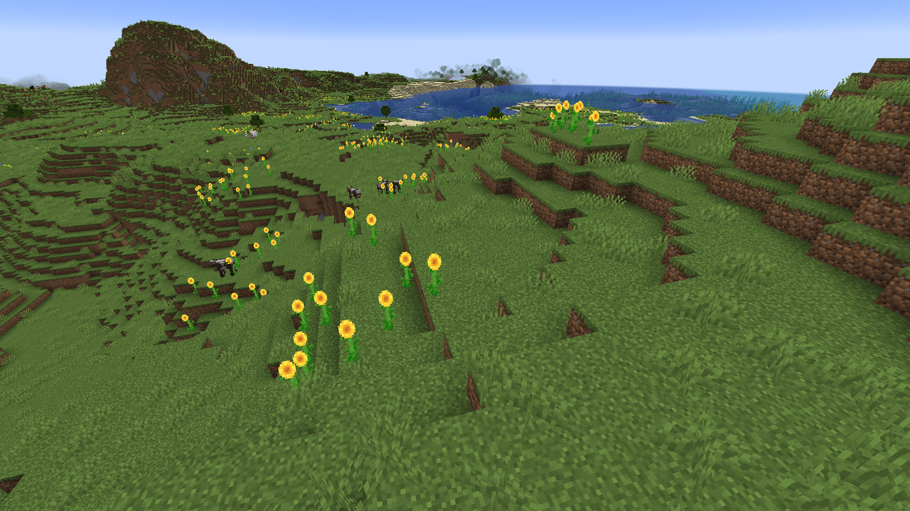


Para más información, visite el siguiente enlace.
Los Bosques
Hay muchos tipos de bosques en Minecraft, pero todos tienen cosas en común y eso te lo explicaremos ahora.
Lobo:
Es uno de los mobs más emblemáticos de los bosques normales y biomas de taiga. Aparecen en manadas y son criaturas neutrales; puedes domesticarlos usando huesos para que te ayuden a atacar monstruos.
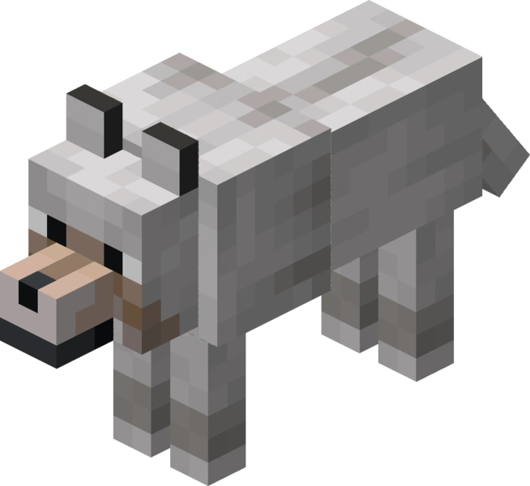
Zorro:
Extremadamente ágiles y asustadizos, habitan en los bosques y áreas de taiga. Suelen aparecer de noche o al amanecer en pequeños grupos y puedes alimentarlos con bayas dulces para ganarte su confianza.
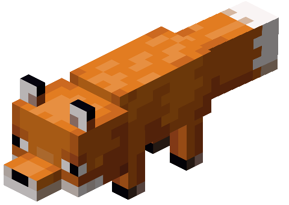
Conejo:
Estos pequeños animales saltarines abundan en los suelos boscosos y en las taigas.
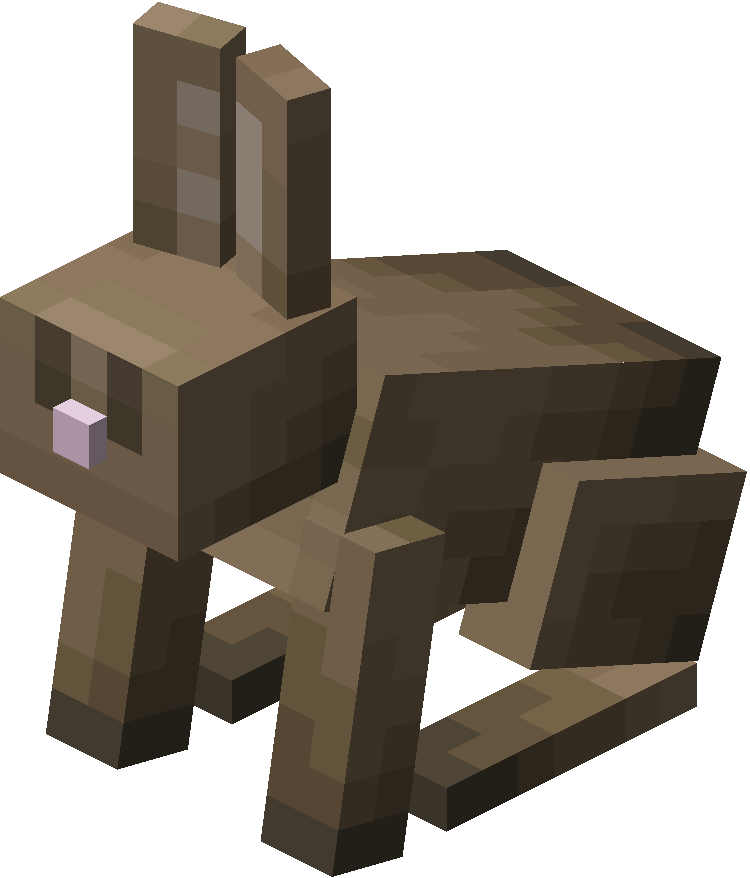
Materiales más valiosos:
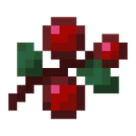
Bayas dulces
Comida encontrada en la taiga, en grandes cantidades, regeneran 1 muslo de comida.
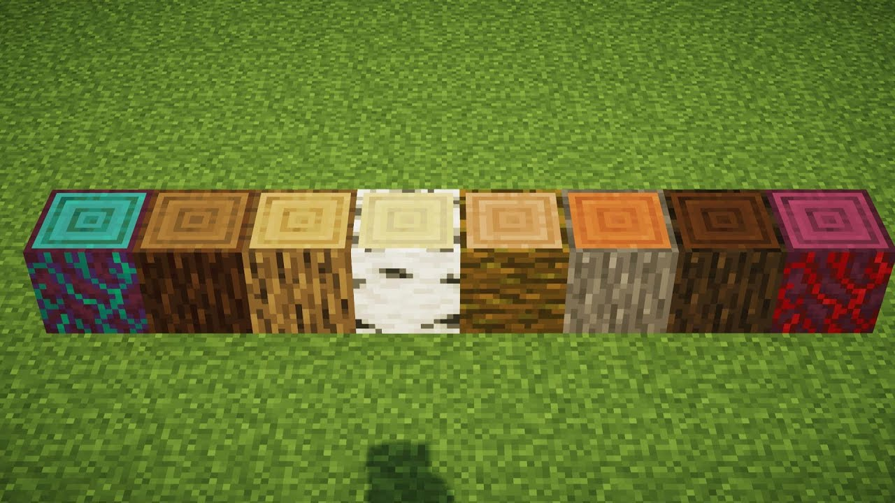
Maderas
El material más abundante dentro de los bosques; dependiendo de la variante serán de distintos colores.
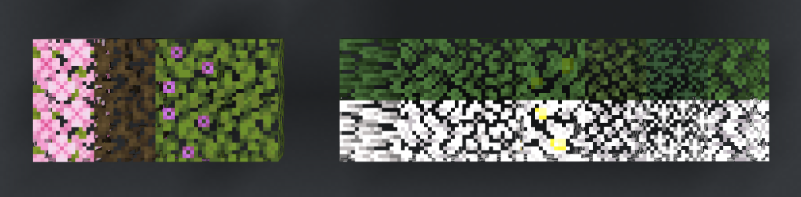
Hojas
Perfectas para decorar; se requieren tijeras para poder obtenerlas.
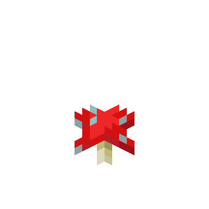
Setas
Sirven para hacer sopas (se requiere un cuenco) para recuperar hambre.
Variantes
Este, como todos los biomas de Minecraft, tiene una gran variedad de variantes.
Algunas variantes son:
-
El Bosque oscuro: Este bosque tiene la particularidad de que
su árbol principal es el roble oscuro, son árboles grandes de 4 bloques de ancho
y tapan al sol, haciendo que las criaturas hostiles sean más comunes.
-
Abedular: Es un bosque común y corriente, con la diferencia
de que su árbol principal es el abedul.


Para más información, visite el siguiente enlace.
Los desiertos
Los desiertos son un bioma muy caluroso, con falta de agua y con misterios que descubrir.
Zombie Disecado
Zombie del desierto, al atacar te da el efecto de hambre
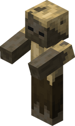
Esqueleto Momificado
Esqueleto del desierto... no cambia nada más.
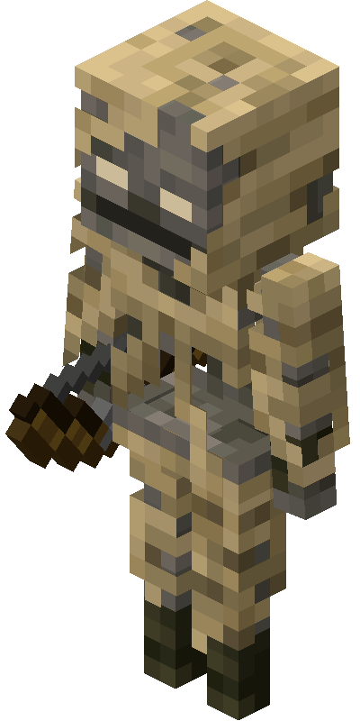
Materiales más valiosos:

Arena
La arena es un bloque que presenta gravedad, sirve para hacer cristal cuando se cocina
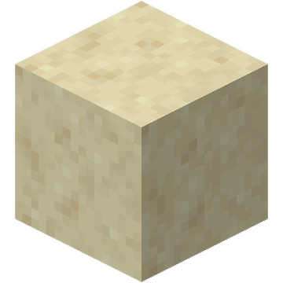
Arenisca
Bloque más duro y que no tiene gravedad, se encuentra en estructuras y cerca de cofres del tesoro
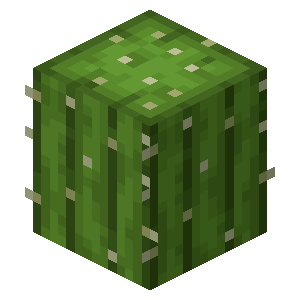
Cactus
Es un cactus... si le arrojas algo, este se destruye.
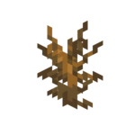
Arbusto Seco
Al romperlo, dará entre 0 y 2 palos.
Variantes
Una de las variantes es:
-
La Meseta: Caracterizada por varios tipos de arenisca y la posibilidad de encontrar
minas abandonadas en ellas

Para más informacion, visite el siguiente enlace.
Casos Especiales
En Minecraft existen varios biomas que no entran dentro de ninguna categoría ya presentada.
Algunos biomas son tan peculiares que no entran en ninguna de las categorías anteriores
Isla Champiñón
La Isla Champiñón es una isla con una baja probabilidad de aparecer.
ChampiVaca roja
La ChampiVaca común y estándar, se puede ordeñar con un cuenco para obtener sopa, se le pueden dar distintas flores para obtener una sopa sospechosa (dependiendo de la flor cambiará el efecto que dará al consumirla), si usas tijeras se vuelve una vaca común, conserva las características de la vaca común.

ChampiVaca marrón
Una ChampiVaca de color marrón, solo es un cambio estético.
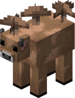
Materiales más valiosos:
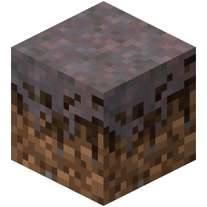
Miselio
Es como un bloque de tierra común, pero no se puede poner vegetación como flores en él, solo setas.
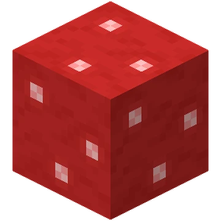
Bloques de Setas
Bloques que provienen de Champiñones gigantes repartidos por la isla.
Setas
Setas pequeñas también distribuidas por la isla.